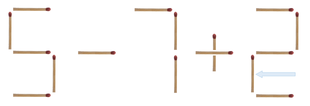
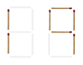

성냥개비로 그린 수식이 주어진다.
예를 들면 위 그림은 5-7+3 을 나타내고, 그 계산 결과는 1이다.
이 그림으로부터 숫자 3을 이루는 성냥개비 중 하나를 옮기면, 아래 그림과 같이 되고, 계산 결과가 0이 된다.

위 예와 같이, 성냥개비를 단 하나만 옮겨서, 식의 계산 결과가 0이 되도록 바꿔 보자.
식은 한 자리 수, +, - 로 이루어져 있다.
숫자는 0부터 9까지 각각, 아래와 같은 모양이어야 한다:

즉, 다음 예와 같은 모양으로 숫자를 만드는 것은 허용되지 않는다:

+, -로 이루어져야 한다.0~9) 혹은 기호(+, -)를 구성하는 성냥개비를 다른 숫자 혹은 기호로 옮기는 것은 허용된다.0+1을 8-1로 바꿀 수 있다.+를 1로 바꿀 수는 없다.111을 9로 바꿀 수는 없다.-1+10 이나 1--1 같은 수식은 입력되지 않는다.성냥개비로 그린 수식을 나타내는 문자열이 첫번째 줄에 주어진다.
문자열의 길이는 최대 100문자이다.
성냥개비를 단 하나만 옮겨서 계산 결과가 0이 되도록 한 식을 적는다.
하나의 입력에 대해 여러 가지 답이 존재할 수도 있는데, 그런 경우에는 가능한 여러 가지 답 중 아무거나 하나를 출력하면 된다.
7-2-3-4
1-2-3+4
모든 숨겨진 입력 데이터에 대해 정답을 맞춘 데이터의 수에 비례하여 점수를 준다.